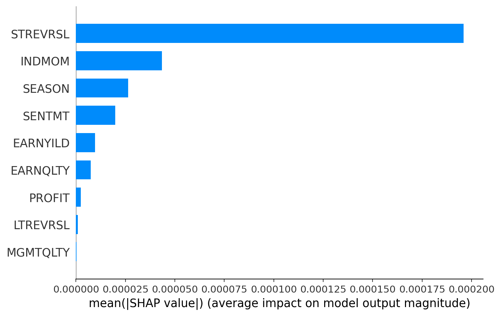

import pandas as pd
import numpy as np
import math
import matplotlib.pyplot as pltOptimisation
Factors
Factor Exposures and Factor Returns
Arbitrage pricing theory relaxes several of the assumptions made in the course of deriving the CAPM. In particular, we relax the assumption that all investors do the same optimization and hence that there is a single efficient fund. This allows the possibility that a CAPM-like relation may hold, but with multiple underlying sources of risk.
Specifically, let \(r_i, i = 1, \ldots, n\) denote the cross-section of asset returns over a given time period \([t, t+1]\). In a fully-general model, the multivariate distribution \(p(r)\) could have arbitrary covariance and higher-moment structures, but remember that for \(n\) large there is typically never enough data to estimate such over-parameterized models.
Instead, we assume a structural model which is the most direct generalization of the CAPM:
\[ r_i = \beta_{i,1} f_1 + \beta_{i,2} f_2 + \cdots + \beta_{i,p} f_p + \epsilon_i, \quad \epsilon_i \sim N(0, \sigma_i^2) \]
If \(p = 1\), this reduces to the Capital Asset Pricing Model (CAPM) in a rather direct way.
With \(p > 1\), the model starts to differ from the CAPM in several very important aspects. In the CAPM, we were able to identify the single efficient fund by arguing that its weights must equal the market-capitalization weights. Hence we were given for free a very nice proxy for the single efficient fund: a capitalization-weighted basket such as the Russell 3000. Hence in the \(p = 1\) case we had a convenient proxy which could be used to impute the return \(f_1\), which we called \(r_M\). Also \(\beta_{i,1}\) could be estimated, with no more than the usual statistical estimation error, by time-series regression.
If \(p > 1\) then the underlying assumptions of that argument break down: there is no longer any simple way to identify \(f_j\) nor \(\beta_{i,j}\) (for \(j = 1, \ldots, p\)). We shall return to the estimation problem in due course.
To avoid confusion with the CAPM, and its simplistic \(\beta\) coefficient (which is still sometimes used in larger multi-factor models), it is conventional to make the following notation change: \(\beta_{i,j}\) becomes \(X_{i,j}\) and so the model equation becomes
\[ r_i = X_{i,1} f_1 + X_{i,2} f_2 + \cdots + X_{i,p} f_p + \epsilon_i, \quad \epsilon_i \sim N(0, \sigma_i^2) \]
It’s difficult to simultaneously estimate both all components \(X_{i,j}\) and all risk-source returns \(f_j\), so one usually assumes one is known and calculates the other via regression. In what follows, we focus on the approach where \(X\) is known, and the \(f_j\) are assumed to be hidden (aka latent) variables.
The structural equation is more conveniently expressed in matrix form:
\[ R_{t+1} = X_t f_{t+1} + \epsilon_{t+1}, \quad E[\epsilon] = 0, \quad V[\epsilon] = D \]
where \(R_{t+1}\) is an \(n\)-dimensional random vector containing the cross-section of returns in excess of the risk-free rate over some time interval \([t, t + 1]\), and \(X_t\) is a (non-random) \(n \times p\) matrix that can be calculated entirely from data known before time \(t\). The variable \(f\) denotes a \(p\)-dimensional random vector process which cannot be observed directly.
Since the variable \(f\) denotes a \(p\)-dimensional random vector process which cannot be observed directly, information about the \(f\)-process must be obtained via statistical inference. We assume that the \(f\)-process has finite first and second moments given by
\[ E[f] = \mu_f, \quad V[f] = F \]
The primary outputs of a statistical inference process are the parameters \(\mu_f\) and \(F\), and other outputs one might be interested in include estimates of the daily realizations \(\hat{f}_{t+1}\).
The simplest way of estimating historical daily realizations of \(\hat{f}_{t+1}\) is by least-squares (ordinary or weighted, as appropriate), viewing the defining model equation as a regression problem.
def sort_cols(test):
return(test.reindex(sorted(test.columns), axis=1))
# Assuming model is in the same directory as the python file
# update data from 2003 to 2010
frames = {}
for year in [2003,2004,2005,2006,2007,2008,2009,2010]:
fil = "pickle_data/FACTOR_MODEL/" + "pandas-frames." + str(year) + ".pickle.bz2"
frames.update(pd.read_pickle(fil))
for x in frames:
frames[x] = sort_cols(frames[x])
# Assuming model is in the same directory as the python file
# update data from 2003 to 2010
covariance = {}
for year in [2003,2004,2005,2006,2007,2008,2009,2010]:
fil = "pickle_data/FACTOR_MODEL/" + "covariance." + str(year) + ".pickle.bz2"
covariance.update(pd.read_pickle(fil))import pandas as pd
import patsy
def wins(x, a, b):
return(np.where(x <= a, a, np.where(x >= b, b, x)))
def clean_nas(df):
numeric_columns = df.select_dtypes(include=[np.number]).columns.tolist()
for numeric_column in numeric_columns:
df[numeric_column] = np.nan_to_num(df[numeric_column])
return df
industry_factors = ['AERODEF', 'AIRLINES', 'ALUMSTEL', 'APPAREL', 'AUTO', 'BANKS', 'BEVTOB',
'BIOLIFE', 'BLDGPROD', 'CHEM', 'CNSTENG', 'CNSTMACH', 'CNSTMATL', 'COMMEQP', 'COMPELEC',
'COMSVCS', 'CONGLOM', 'CONTAINR', 'DISTRIB', 'DIVFIN', 'ELECEQP', 'ELECUTIL', 'FOODPROD',
'FOODRET', 'GASUTIL', 'HLTHEQP', 'HLTHSVCS', 'HOMEBLDG', 'HOUSEDUR', 'INDMACH', 'INSURNCE',
'LEISPROD', 'LEISSVCS', 'LIFEINS', 'MEDIA', 'MGDHLTH', 'MULTUTIL', 'OILGSCON', 'OILGSDRL',
'OILGSEQP', 'OILGSEXP', 'PAPER', 'PHARMA', 'PRECMTLS', 'PSNLPROD', 'REALEST', 'RESTAUR',
'ROADRAIL', 'SEMICOND', 'SEMIEQP', 'SOFTWARE', 'SPLTYRET', 'SPTYCHEM', 'SPTYSTOR', 'TELECOM',
'TRADECO', 'TRANSPRT', 'WIRELESS']
style_factors = ['BETA', 'SIZE', 'MOMENTUM', 'VALUE']
def get_formula(alpha):
L = ["0", alpha]
L.extend(style_factors)
L.extend(industry_factors)
return "Ret ~ " + " + ".join(L)
def get_estu(df):
"""Estimation universe definition"""
estu = df.loc[df.IssuerMarketCap > 1e9].copy(deep=True)
return estu
def colnames(X):
""" return names of columns, for DataFrame or DesignMatrix """
if type(X) == patsy.design_info.DesignMatrix:
return X.design_info.column_names
if type(X) == pd.core.frame.DataFrame:
return X.columns.tolist()
return None
def diagonal_factor_cov(date, X):
"""Factor covariance matrix, ignoring off-diagonal for simplicity"""
cv = covariance[date]
k = np.shape(X)[1]
Fm = np.zeros([k,k])
for j in range(0,k):
fac = colnames(X)[j]
Fm[j,j] = (0.01**2) * cv.loc[(cv.Factor1==fac) & (cv.Factor2==fac),"VarCovar"].iloc[0]
return (Fm,k)
def risk_exposures(estu):
"""Exposure matrix for risk factors, usually called X in class"""
L = ["0"]
L.extend(style_factors)
L.extend(industry_factors)
my_formula = " + ".join(L)
return patsy.dmatrix(my_formula, data = estu)Helpful code to show how to get X, F, D matrices
my_date = '20101231'
# estu = estimation universe
estu = get_estu(frames[my_date])
estu['Ret'] = wins(estu['Ret'], -0.25, 0.25)
rske = risk_exposures(estu)
F = diagonal_factor_cov(my_date, rske)
X = np.asarray(rske)
D = np.asarray( (estu['SpecRisk'] / (100 * math.sqrt(252))) ** 2 )
kappa = 1e-5
candidate_alphas = [
'STREVRSL', 'LTREVRSL', 'INDMOM',
'EARNQLTY', 'EARNYILD', 'MGMTQLTY', 'PROFIT', 'SEASON', 'SENTMT']problem 0
All of the below pertain to the estimation universe as defined above. Modify the daily data frames, removing all non-estimation-universe rows, before continuing.
# updated frames dataset for the new estu universe
for date in frames:
frames[date] = get_estu(frames[date])Problem 1. Residual Returns
Within each daily data frame, let \(Y\) denote the residuals of the variable Ret, with respect to the risk model. In other words, define
\[ Y := \text{Ret} - XX^+\text{Ret} \]
where \(X^+\) denotes the pseudoinverse, and \(X\) is constructed as above (i.e., using the risk_exposures function). Augment the data frames you have been given, by adding a new column, \(Y\), to each frame. Be sure to winsorize the Ret column prior to computing \(Y\) as above. You do not have to save the augmented data, unless you want to. In other words, the modification that adds column \(Y\) can be done in-memory.
# pseudoinverse function
def pinv(A):
# Compute SVD of the matrix
U, s, Vt = np.linalg.svd(A,full_matrices=False)
# Step 2: Create the pseudoinverse of the diagonal matrix Sigma
s_pinv = np.zeros(s.shape) # creating an empty matrix to store invesed diagonals in
for i in range(len(s)):
if s[i] != 0: # Consider only diagonals
s_pinv[i] = 1.0 / s[i] # inverse the diagonals
# Compute the pseudoinverse of A using the formula from equation 2 listed above
A_pinv = Vt.T @ np.diag(s_pinv) @ U.T
return A_pinvfor date in frames:
# Winsorize the 'Ret' column
frames[date]['Ret'] = wins(frames[date]['Ret'], -0.25, 0.25)
# Compute the Risk Exposure Matrix (X)
estu = get_estu(frames[date])
rske = risk_exposures(estu)
X = np.asarray(rske)
# Compute the Pseudoinverse (X^+)
X_pinv = pinv(X)
# Calculate Residuals (Y)
Y = estu['Ret'] - np.matmul(X, np.matmul(X_pinv, estu['Ret']))
# Augment the Data Frames with the calculated Y
estu['Y'] = Y
# Update the frame in the dictionary
frames[date] = estuProblem 2. Model Selection
Split your data into a training/validation set \(D_{\text{train}}\), and an ultimate test set (vault), \(D_{\text{test}}\). Do not split within a single day; rather, some dates end up in \(D_{\text{train}}\) and the rest in \(D_{\text{test}}\). This will be the basis of your cross-validation study later on.
It will be helpful to join together vertically the frames in the training/validation set \(D_{\text{train}}\) into a single frame called a panel. For the avoidance of doubt, the panel will have the same columns as any one of the daily frames individually, and the panel will have a large number of rows (the sum of all the rows of all the frames in \(D_{\text{train}}\)).
Consider the list of candidate alpha factors given above. Find a model of the form \(Y = f(\text{candidate alphas}) + \epsilon\) where \(Y\) is the residual return from above. Determine the function \(f()\) using cross-validation to optimize any tunable hyper-parameters. First, to get started, assume \(f\) is linear and use lasso or elastic net cross-validation tools (e.g., from sklearn). Then, get creative and try at least one non-linear functional form for \(f\), again using cross-validation to optimize any tunable hyper-parameters.
Part 1
import pandas as pd
def create_panel_data(frames, split_ratio=0.8):
"""
Splits the data into training and test sets and creates panel data for each.
Parameters:
- frames: Dictionary with dates as keys and data frames as values.
- split_ratio: Float representing the percentage of data to be used for training.
Returns:
- train_panel: Panel data for training set.
- test_panel: Panel data for test set.
"""
# Sort the dates to ensure chronological splitting
sorted_dates = sorted(frames.keys())
# Calculate the index to split the data
split_index = int(split_ratio * len(sorted_dates))
# Split the dates into training and testing
train_dates = sorted_dates[:split_index]
test_dates = sorted_dates[split_index:]
# Extract frames for training and testing
train_frames = {date: frames[date] for date in train_dates}
test_frames = {date: frames[date] for date in test_dates}
# Concatenate the frames vertically to create panels
train_panel = pd.concat(train_frames.values())
test_panel = pd.concat(test_frames.values())
return train_panel, test_panel
# Usage example
train_panel, test_panel = create_panel_data(frames, split_ratio=0.8)
Y = train_panel["Y"]
x = train_panel[candidate_alphas]
X_test = test_panel[candidate_alphas]
Y_test = test_panel["Y"]print("Shape of X:", x.shape)
print("Shape of Y:", Y.shape)Shape of X: (3955790, 9)
Shape of Y: (3955790,)def get_candidate_alpha_coefficients_from_model(model_coef, candidate_alphas):
"""
Extracts coefficients of candidate alphas from a given model.
Parameters:
model_coef (pd.Series): Coefficients from the model.
candidate_alphas (list): List of candidate alpha factors.
Returns:
pd.Series: Coefficients for candidate alphas.
"""
return model_coef[candidate_alphas]Model 1 lasso
import numpy as np
import pandas as pd
from sklearn.linear_model import LassoCV, ElasticNetCV
from sklearn.metrics import mean_squared_error
# create a LassoCV model
num_alphas = 1000
lasso = LassoCV(n_alphas=num_alphas, cv=5)
# fit the model based on the data
lasso.fit(x, Y)
# Best alpha for Lasso
best_alpha_lasso = lasso.alpha_
print("Best alpha for Lasso:", best_alpha_lasso)
coef = pd.Series(lasso.coef_, index = x.columns)
lasso_candidate_alpha_coefs = get_candidate_alpha_coefficients_from_model(coef, candidate_alphas)
# Print out alpha factors variables picked by Lasso
selected_alphas_lasso = lasso_candidate_alpha_coefs[lasso_candidate_alpha_coefs != 0].sort_values(ascending=False)
print("Alpha factors variables picked by Lasso:")
print(selected_alphas_lasso)
# Predict using the Lasso model
Y_pred = lasso.predict(X_test)
# Calculate RMSE
rmse = np.sqrt(mean_squared_error(Y_test, Y_pred))
print(f"the rmse score is \n {rmse}")Best alpha for Lasso: 1.1233678141770053e-05
Alpha factors variables picked by Lasso:
STREVRSL 0.000340
INDMOM 0.000107
SENTMT 0.000067
SEASON 0.000061
EARNYILD 0.000041
PROFIT 0.000037
MGMTQLTY 0.000026
dtype: float64
the rmse score is
0.019451631137723656model 2 ElasticNet
# create a ElasticNetCV model
l1_space = np.linspace(0.01, 1, 30)
elastic_net = ElasticNetCV(l1_ratio=l1_space, cv=5)
# fit the model based on the data
elastic_net.fit(x, Y)
coef = pd.Series(elastic_net.coef_, index = x.columns)
# Best alpha and l1_ratio for Elastic Net
best_alpha_elastic_net = elastic_net.alpha_
best_l1_ratio_elastic_net = elastic_net.l1_ratio_
print("Best alpha for Elastic Net:", best_alpha_elastic_net)
print("Best l1_ratio for Elastic Net:", best_l1_ratio_elastic_net)
# Coefficients for the best Elastic Net model
elastic_net_coef = pd.Series(elastic_net.coef_, index = x.columns)
elastic_net_candidate_alpha_coefs = get_candidate_alpha_coefficients_from_model(elastic_net_coef, candidate_alphas)
print("Coefficients for the best Elastic Net model:")
print(elastic_net_candidate_alpha_coefs)
# Print out alpha factors variables picked by ElasticNet
selected_alphas_elastic_net = elastic_net_candidate_alpha_coefs[elastic_net_candidate_alpha_coefs != 0].sort_values(ascending = False)
print("Alpha factors variables picked by ElasticNet:")
print(selected_alphas_elastic_net)
Y_pred_elastic_net = elastic_net.predict(X_test)
rmse_elastic_net = np.sqrt(mean_squared_error(Y_test, Y_pred_elastic_net))
rmse_elastic_netBest alpha for Elastic Net: 0.0011128252534198637
Best l1_ratio for Elastic Net: 0.01
Coefficients for the best Elastic Net model:
STREVRSL 0.000340
LTREVRSL -0.000000
INDMOM 0.000107
EARNQLTY 0.000000
EARNYILD 0.000041
MGMTQLTY 0.000026
PROFIT 0.000037
SEASON 0.000061
SENTMT 0.000067
dtype: float64
Alpha factors variables picked by ElasticNet:
STREVRSL 0.000340
INDMOM 0.000107
SENTMT 0.000067
SEASON 0.000061
EARNYILD 0.000041
PROFIT 0.000037
MGMTQLTY 0.000026
dtype: float640.019451631909229154model 3 - Hypertuned XGBOOST
import xgboost as xgb
from sklearn.model_selection import GridSearchCV
import numpy as np
from sklearn.metrics import mean_squared_error
import shap
# Define the parameter grid for XGBoost
param_grid = {
'learning_rate': [0.01, 0.1],
'n_estimators': [100, 200],
'max_depth': [3, 5, 7]
}
# Initialize the XGBoost regressor
xgb_model = xgb.XGBRegressor()
# Create GridSearchCV
grid_search = GridSearchCV(estimator=xgb_model, param_grid=param_grid, cv=3, n_jobs=-1)
# Fit the grid search to the data
grid_search.fit(x, Y) # Replace X_train, Y_train with your data
# The best hyperparameters from GridSearchCV
print("Best Parameters:", grid_search.best_params_)
best_params = grid_search.best_params_
# Fit the XGBoost model using the best parameters
best_xgb_model = xgb.XGBRegressor(**best_params)
best_xgb_model.fit(x, Y) # Replace X_train, Y_train with your data
# Predict using the XGBoost model
Y_pred_xgb = best_xgb_model.predict(X_test) # Replace X_test with your test data
# Calculate RMSE for XGBoost
rmse_xgb = np.sqrt(mean_squared_error(Y_test, Y_pred_xgb)) # Replace Y_test with your test data
print(f"the RMSE score of the XGBoost model is: \n {rmse_xgb}")
explainer = shap.TreeExplainer(best_xgb_model)
shap_values = explainer.shap_values(X_test) # Replace X_test with a small subset of your test data
shap.summary_plot(shap_values, X_test, plot_type="bar") # Replace X_test with the same subset of your test dataIProgress not found. Please update jupyter and ipywidgets. See https://ipywidgets.readthedocs.io/en/stable/user_install.html
[01:15:44] WARNING: /Users/runner/work/xgboost/xgboost/src/c_api/c_api.cc:1240: Saving into deprecated binary model format, please consider using `json` or `ubj`. Model format will default to JSON in XGBoost 2.2 if not specified.Best Parameters: {'learning_rate': 0.01, 'max_depth': 3, 'n_estimators': 200}
the RMSE score of the XGBoost model is:
0.019451616311665722
Problem 3. Efficient Portfolio Optimization
Code up the efficient formula for portfolio optimization discussed in lecture, based on the Woodbury matrix inversion lemma.
Markowitz Model: Mathematical Foundation
Objective
The goal is to construct a portfolio that offers the maximum expected return for a given level of risk or the minimum risk for a given level of expected return.
Variables
- \(h\): Vector of portfolio weights.
- \(r\): Vector of expected asset returns.
- \(\Omega\): Covariance matrix of asset returns.
Expected Portfolio Return
- \(E[h' r]\), where \(h'\) denotes the transpose of \(h\).
Portfolio Variance (Risk)
- \(h' \Omega h\).
Optimization Problem
Maximize \(E[h' r] - \frac{1}{2\kappa} h' \Omega h\), where \(\kappa\) is a risk-aversion parameter. This form assumes a quadratic utility function which represents the trade-off between risk and return.
Solution
Under the assumption that \(\Omega\) is invertible, the optimal portfolio weights \(h^*\) can be found as \(h^* = \frac{1}{\kappa} \Omega^{-1} E[r]\).
Mean-Variance Formulation
The problem simplifies to Maximize over \(h\): \(h' E[r] - \frac{1}{2\kappa} h' \Omega h\).
Woodbury Matrix Inversion Lemma
This lemma provides an efficient way to compute the inverse of a matrix that has been modified by a rank-k update. The formula is:
\((A + UCV)^{-1} = A^{-1} - A^{-1} U (C^{-1} + VA^{-1} U)^{-1} VA^{-1}\)
Where: - \(A\) is a square matrix. - \(U, C, V\) are matrices of appropriate dimensions.
Application in Portfolio Optimization
Applying the Woodbury lemma to the covariance matrix in the Markowitz model can significantly speed up computations, especially for large portfolios.
In the Portfolio Context
- Let \(A = D\), \(U = X\), \(V = X'\), and \(C = F\) in the Woodbury lemma.
- \(D\) represents a diagonal matrix (typically of variances), \(X\) is a factor loading matrix, and \(F\) is the covariance matrix of factors.
Efficient Inverse Calculation
By using the Woodbury lemma, one can efficiently compute \(\Omega^{-1}\), which is crucial for determining the optimal portfolio weights in the Markowitz model.
import scipy.optimize
# Woodbury Matrix Inversion Lemma Function
def woodbury_inverse(A, U, C, V):
A_inv = np.linalg.inv(A)
M = np.linalg.inv(C + V @ A_inv @ U)
return A_inv - A_inv @ U @ M @ V @ A_inv
# Portfolio Optimization Function
def optimize_portfolio(date, frames, covariance, kappa, alpha_factors):
estu = get_estu(frames[date])
n = estu.shape[0]
# print(f"Number of assets in EstU: {n}")
estu['Ret'] = wins(estu['Ret'], -0.25, 0.25)
# Combine alpha factors into a single alpha score
estu['alpha'] = sum([estu[factor] * coefficient for factor, coefficient in alpha_factors.items()])
estu_alpha = estu['alpha'].to_numpy()
# Risk exposures and factor covariance
rske = risk_exposures(estu)
# print(f"Dimension of risk exposures (rske): {rske.shape}")
Fm,k = diagonal_factor_cov(date, rske)
A = np.diag(np.diag(Fm))
U = Fm - A
V = U.T
C = np.eye(k)
F = woodbury_inverse(A,U,C,V)
X = np.asarray(rske)
D = np.asarray((estu['SpecRisk'] / (100 * math.sqrt(252))) ** 2)
# Optimization objective function
def fun(h):
x = X.T @ h
obj = -np.dot(h, estu_alpha) + 0.5 * kappa * (np.dot(x, F @ x) + np.dot(h ** 2, D))
return obj
# Gradient of the objective function
def grad_f(h):
return -estu_alpha + kappa * (X @ (F @ (X.T @ h)) + D * h)
# Optimization using L-BFGS-B algorithm
optimizer_result = scipy.optimize.fmin_l_bfgs_b(fun, np.zeros(n), fprime=grad_f)
return optimizer_resultProblem 4. Putting it All Together
Using the helpful code example above, and using the output of the function \(f\) as your final alpha factor, construct a backtest of a portfolio optimization strategy. In other words, compute the optimal portfolio each day, and dot product it with Ret to get the pre-tcost 1-day profit for each day. Use the previous problem to speed things up. Create time-series plots of the long market value, short market value, and cumulative profit of this portfolio sequence. Also plot the daily risk, in dollars, of your portfolios and the percent of the risk that is idiosyncratic.
import numpy as np
import pandas as pd
import matplotlib.pyplot as plt
import math
# Your existing code with modifications for risk calculations and direct ls_ratio calculation
cumulative_profit = []
long_market_value = []
short_market_value = []
daily_risk = []
idiosyncratic_risk_percent = []
ls_ratio_list = [] # To store the long-short ratio
for date in sorted(frames.keys()):
optimal_portfolio = optimize_portfolio(date, frames, covariance, kappa, selected_alphas_lasso)
optimal_portfolio = optimal_portfolio[0] / sum(np.abs(optimal_portfolio[0]))
# Calculate portfolio metrics
daily_return = optimal_portfolio @ frames[date]['Ret']
cumulative_profit.append(daily_return)
long_mv = np.sum(optimal_portfolio[optimal_portfolio > 0])
short_mv = np.sum(optimal_portfolio[optimal_portfolio < 0])
long_market_value.append(long_mv)
short_market_value.append(short_mv)
# Calculate long-short ratio directly in the loop
ls_ratio = np.abs(long_mv / short_mv) if short_mv != 0 else np.inf
ls_ratio_list.append(ls_ratio)
# Total risk and idiosyncratic risk calculations
total_risk = np.abs(optimal_portfolio) @ (frames[date]['TotalRisk'] / (100 * math.sqrt(252)))
idio_risk = 1 - (np.abs(optimal_portfolio) @ (frames[date]['SpecRisk'] / (100 * math.sqrt(252)))) / total_risk
daily_risk.append(total_risk)
idiosyncratic_risk_percent.append(idio_risk * 100) # Convert to percentage
# Convert lists to time series
date_index = pd.to_datetime(sorted(frames.keys()))
cumulative_profit_ts = pd.Series(cumulative_profit, index=date_index).cumsum()
long_market_value_ts = pd.Series(long_market_value, index=date_index)
short_market_value_ts = pd.Series(short_market_value, index=date_index)
daily_risk_ts = pd.Series(daily_risk, index=date_index)
idiosyncratic_risk_percent_ts = pd.Series(idiosyncratic_risk_percent, index=date_index)
ls_ratio_ts = pd.Series(ls_ratio_list, index=date_index)Daily returns and Market Analysis using optimal weights (Markowitz Theory)
# Combine into a single DataFrame
result_df = pd.DataFrame({
'Cumulative Profit': cumulative_profit_ts,
'Long Market Value': long_market_value_ts,
'Short Market Value': short_market_value_ts,
'Daily Risk': daily_risk_ts,
'Idiosyncratic Risk Percent': idiosyncratic_risk_percent_ts,
'LS Ratio': ls_ratio_ts
}, index=date_index)
result_df| Cumulative Profit | Long Market Value | Short Market Value | Daily Risk | Idiosyncratic Risk Percent | LS Ratio | |
|---|---|---|---|---|---|---|
| 2003-01-02 | -0.000330 | 0.501335 | -0.498665 | 0.023709 | 30.372889 | 1.005355 |
| 2003-01-03 | 0.002805 | 0.501521 | -0.498479 | 0.024614 | 27.845298 | 1.006101 |
| 2003-01-06 | 0.004425 | 0.499129 | -0.500871 | 0.025302 | 28.489822 | 0.996520 |
| 2003-01-07 | 0.004374 | 0.500333 | -0.499667 | 0.025602 | 28.603909 | 1.001335 |
| 2003-01-08 | 0.003961 | 0.501308 | -0.498692 | 0.025428 | 29.079773 | 1.005244 |
| ... | ... | ... | ... | ... | ... | ... |
| 2010-12-27 | 0.942190 | 0.499911 | -0.500089 | 0.019602 | 23.197892 | 0.999644 |
| 2010-12-28 | 0.943419 | 0.501309 | -0.498691 | 0.018910 | 24.076420 | 1.005248 |
| 2010-12-29 | 0.944268 | 0.502189 | -0.497811 | 0.018345 | 24.562678 | 1.008793 |
| 2010-12-30 | 0.944304 | 0.501774 | -0.498226 | 0.017801 | 25.325438 | 1.007123 |
| 2010-12-31 | 0.946676 | 0.500637 | -0.499363 | 0.017313 | 26.311766 | 1.002553 |
2015 rows × 6 columns
Plotting the daily returns and Market Analysis
df = pd.DataFrame(result_df, index=date_index)
# Plotting
plt.figure(figsize=(15, 10))
# Subplot for Cumulative Profit
plt.subplot(3, 2, 1)
plt.plot(df['Cumulative Profit'], marker='o', color='blue')
plt.title('Cumulative Profit')
plt.xlabel('Date')
plt.ylabel('Profit')
plt.grid(True)
# Subplot for Long Market Value
plt.subplot(3, 2, 2)
plt.plot(df['Long Market Value'], marker='o', color='green')
plt.title('Long Market Value')
plt.xlabel('Date')
plt.ylabel('Value')
plt.grid(True)
# Subplot for Short Market Value
plt.subplot(3, 2, 3)
plt.plot(df['Short Market Value'], marker='o', color='red')
plt.title('Short Market Value')
plt.xlabel('Date')
plt.ylabel('Value')
plt.grid(True)
# Subplot for Daily Risk
plt.subplot(3, 2, 4)
plt.plot(df['Daily Risk'], marker='o', color='purple')
plt.title('Daily Risk')
plt.xlabel('Date')
plt.ylabel('Risk')
plt.grid(True)
# Subplot for Idiosyncratic Risk Percent
plt.subplot(3, 2, 5)
plt.plot(df['Idiosyncratic Risk Percent'], marker='o', color='orange')
plt.title('Idiosyncratic Risk Percent')
plt.xlabel('Date')
plt.ylabel('Percent')
plt.grid(True)
# Subplot for LS Ratio
plt.subplot(3, 2, 6)
plt.plot(df['LS Ratio'], marker='o', color='brown')
plt.title('LS Ratio')
plt.xlabel('Date')
plt.ylabel('Ratio')
plt.grid(True)
# Adjust layout
plt.tight_layout()
plt.show()